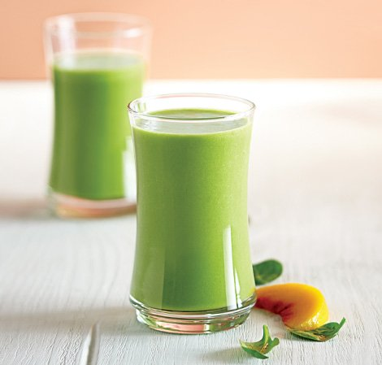

Peachy Green Smoothie

Description
Full of peach flavor, this smoothie perfectly masks the spinach that gives it a green hue.
Even better than that, it only takes less than 5 minutes to make!
Ingredients
- 1 cup (240 ml) soy milk, or water
- 1 large (200 g) apple, havled, seeded
- 2 cups (60 g) fresh spinach
- 2 cups (240 g) frozen peach slices
Steps
- Place all ingredients into the Vitamix container in the order listed and secure the lid.
- Start the blender on its lowest speed, then quickly increase to its highest speed.
- Blend for 30-45 seconds or until desired consistency is reached, using the tamper to press ingredients toward the blades.
Return to main page